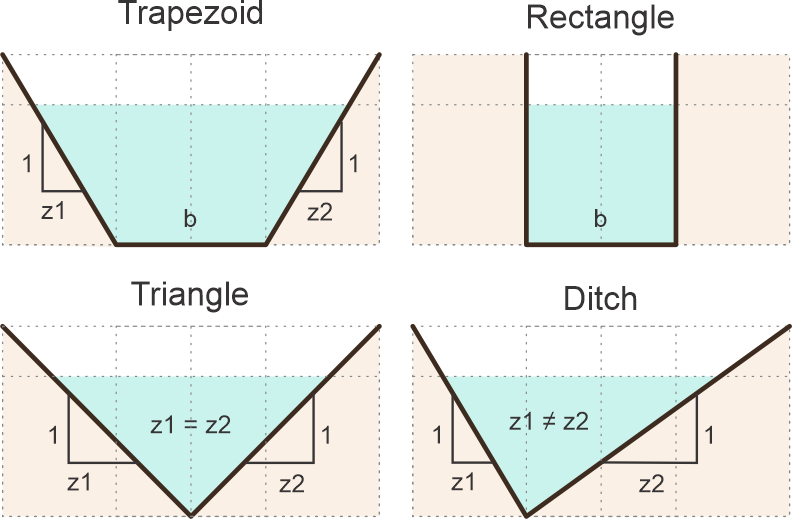

An open channel flow is the movement of a liquid, like water, in a conduit that has a free surface exposed to the atmosphere. Unlike a pipe that is completely full, open channel flow is driven by gravity, and the top surface of the liquid is not under pressure. Common examples include rivers, streams, canals, and storm drains.
Geometries
General parameters
|
Unit system |
Q flow |
| g gravity |
b channel base |
| z1 left side slope |
z2 right side slope |
| So channel slope |
n energy loss coefficient |
| α kinetic energy correction factor |
ρ fluid density, rho |
Numerical method parameters
| y1 min high channel to eval |
y2 max high channel to eval |
| Steps iterations |
Comparte esta App
♥ APP DISCLAIMER: NO WARRANTY - This software is provided by github.com/rcfdtools "as is," without any express or implied warranty, including warranties of merchantability, fitness for a particular purpose, or non-infringement. There is no guarantee that the software will be error-free or operate without interruption. LIMITATION OF LIABILITY - Neither the authors nor copyright holders will be liable for claims or damages arising from the software or its use. You are responsible for determining if the software is appropriate for your use and assume all associated risks, including errors, legal compliance, and data loss. NO PROFESSIONAL ADVICE - The software provides general information and does not offer professional advice. It should not replace consultation with professional advisors. Copyright © 2025 rcfdtools. All rights reserved.